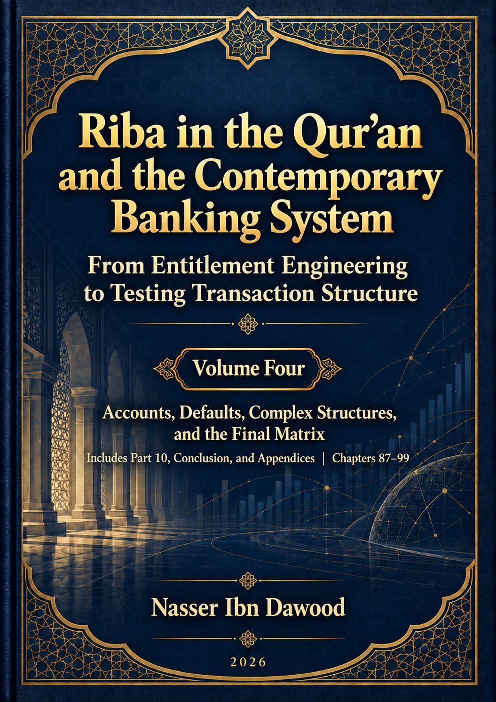

132. Riba in the Qur’an and the Contemporary Banking System — Volume Four

Financial products, the unified variable matrix, and independent re-testing, preserving the research status of operational models.
Condensed conceptual English adaptation; the Arabic text remains the primary source for detailed analysis and references. The supplied Volume Four cover from the Arabic source folder is used with the author’s approval.
قراءة PDF داخل الموقع / Read the PDF on this website
جارٍ تجهيز القارئ… / Preparing the reader…
Book Summary, Table of Contents & Excerpt
Riba in the Qur’an and the Contemporary Banking System
Volume Four: Financial Products, the Unified Variable Matrix, and Independent Re-Testing
I. The Global Knowledge Manifesto
Knowledge is a universal right. The author firmly believes that wisdom should not be locked behind paywalls or language barriers.
Global Access Policy. All books in this library are available for free in multiple digital formats (PDF, HTML, DOCX, TXT).
The Digital Library. As of early 2026, the collection hosts 236 volumes (118 in Arabic and 118 in English), fully optimized for AI-assisted research and digital archiving.
Official Platforms. Main Website: nasserhabitat.github.io/nasser-books/
GitHub: nasserhabitat/nasser-books
This manifesto is reproduced here as supplied by the author for this condensed edition.
II. Translator’s Note: The Bridge of Meaning
This English edition is a condensed conceptual adaptation. It is not a word-for-word translation, but rather an “extraction of essence.” It presents the core philosophical framework in accessible English, omitting the exhaustive linguistic debates and classical references found in the original Arabic text.
For the academic researcher, the original Arabic version remains the primary source for comprehensive linguistic analysis, detailed exegesis (tafsir), and the complete bibliography.
This adaptation also preserves the methodological status of the Arabic edition. A claim marked OPEN remains open; a CANDIDATE remains a candidate; a RESISTED or STRONGLY RESISTED claim is not revived through simplification; and a CLOSED result remains closed only within its declared scope. The aim is clarity without scientific inflation.
Key Qur’anic terms are sometimes retained in transliteration—such as nafs, tawaffī, barzakh, and baʿth—when a single English equivalent would prematurely narrow the field under study.
Scope of this volume
Volume Four completes the product audits and methodological framework in Chapters 87–99. Chapters 87–93 examine credit cards, deposits, investment accounts, rescheduling, late-payment claims, debtor states, and sukuk. Chapters 94–98 develop the Unified Transaction Variable Matrix (UTVM) and its component matrices. Chapter 99 sets out how an independent researcher can repeat the tests. The summaries condense the argument and do not reproduce all source tables, claim cards, regulatory references, or case evidence.
Governing boundary
The Qur’anic corpus remains the evidence base for investigating the meaning of riba. Contemporary contracts, product pages, regulations, accounting standards, and financial records describe applications; they do not define the Qur’anic term. RIBA-QTAM and UTVM organize evidence and questions, but neither is an automatic classifier.
The final definition of riba remains NOT SEALED. Classification readiness remains OPEN / NOT PASSED. E*-R2—the ground of entitlement together with the bilateral-right boundary—remains a STRONG AUDIT CANDIDATE / OPEN, not a completed semantic rule. The volume’s matrices make the analysis more consistent and reproducible; they do not close the underlying question.
Part IX — Completing the financial product laboratory (Chapters 87–93)
Chapter 87 — Credit cards
The credit-card audit follows events, balances, and claims rather than treating “credit card” as one uniform transaction. It distinguishes the payment instrument from credit extended to the customer and maps the account’s different balance categories, statement cycle, payment timing, grace period, payment allocation, fees, rates, and post-due claims.
Rules and standards from contemporary regulators, payment networks, and standard-setting bodies are used as application sources, not as Qur’anic authorities. A real case requires the card agreement, fee schedule, term-cost disclosures, statements, transaction logs, balance-bucket data, and payment-allocation rules. The chapter does not infer a classification from the card label, the presence of a balance, or a particular charge alone. Its findings remain specific to the case structure and governing documentation examined.
Chapter 88 — Accounts and deposits
This chapter examines bank accounts and deposits through the customer’s claim and the movement of funds. It asks what kind of account is involved, who owes what to whom, how balances are recorded, and whether a deposit functions as a repayable claim, a service relationship, or another arrangement. Similar account names may conceal different terms and operational features.
The accounting description of a balance as a liability can help reconstruct the contemporary structure; it does not establish that “deposit equals debt” as a Qur’anic rule. A real audit needs the account agreement, statements, rate and fee schedules, applicable protections, and the relevant transaction history. The chapter keeps product description separate from semantic definition.
Chapter 89 — Investment accounts and profit-sharing investment accounts
The chapter audits investment accounts, including profit-sharing investment accounts (PSIA), by tracing the pool, mandate, investment activity, return calculation, loss exposure, and any reserves or smoothing mechanisms. It distinguishes an investment account from an ordinary deposit account and asks how the investor’s claim changes with the underlying pool and its performance.
Profit and loss sharing, exposure to loss, and pool governance are application variables, not Qur’anic classifiers. Contemporary accounting and standardization sources may help reconstruct the product framework, but they do not define riba. A specific audit requires the investor agreement, pool mandate, mudaraba or wakala terms, profit formula, loss-allocation rules, reserve arrangements, and reports about actual performance.